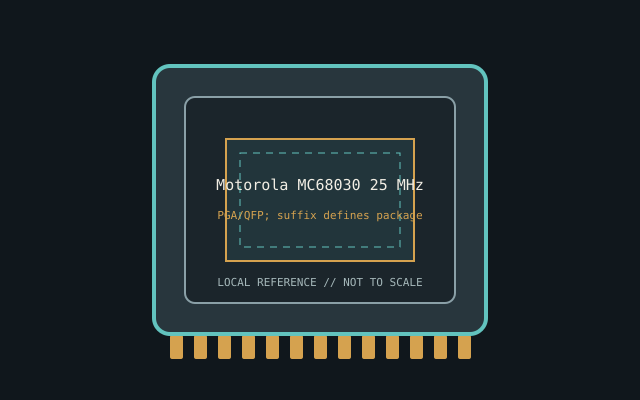

[ INDIVIDUAL CPU COMPONENT ]
Motorola MC68030 25 MHz
32-bit CPU/MMU, separate 256-byte I/D caches, 25 MHz grade Model-specific record; confirm the complete part marking before installation.

IDENTIFICATION: Motorola MC68030 25 MHz. Product name alone does not establish package, stepping, voltage or firmware compatibility.
Verified model specifications
| Catalog path | Other → Motorola 68000-family processors |
|---|---|
| Model and compute | 32-bit CPU/MMU, separate 256-byte I/D caches, 25 MHz grade |
| Package / socket | PGA/QFP; suffix defines package/temp |
| Compatibility | 68030 bus platform and cache/MMU/clock setup |
| Stepping and variants | Mask and ordering suffix define timing/package |
Compatibility and service
- 68030 bus platform and cache/MMU/clock setup
- Mask and ordering suffix define timing/package
- Record board/ROM/OS; photograph pins
- Confirm board manual, exact CPU support list, firmware, voltage/power, memory and cooling before use; never force a package.
Service & archival notes
Record board/ROM/OS; photograph pins
Photograph package, markings, contacts and date/lot codes before repair. Log host board, BIOS/microcode, memory, cooler, condition, provenance and source revision.
Sources & further reading
- NXP/Motorola M68020 User ManualManufacturer bus reference; confirm package drawing for the exact suffix.
- NXP legacy processor documentsManufacturer documentation index.
Manufacturer documents take precedence. Family-level references may not resolve every stepping; verify the marking and motherboard CPU list.